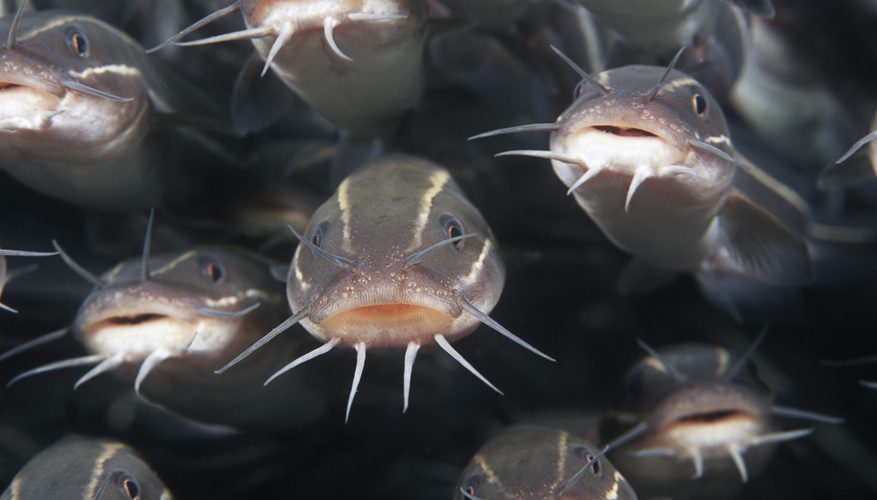

Current Temperature:
°F
Current Wind Speed:
mph
Today's Forecast:
10 Day Forecast
| Day 1 | Day 2 | Day 3 | Day 4 | Day 5 | Day 6 | Day 7 | Day 8 | Day 9 | Day 10 |
|---|---|---|---|---|---|---|---|---|---|
| °F | °F | °F | °F | °F | °F | °F | °F | °F | °F |
Franklin Attractions

Catfish Derby Days is an annual three-day city celebration held on the fourth weekend in July.
Events include a contest to catch the biggest catfish, a street dance, a square dance, Sunday parades, a coed volleyball tournament, a men's 12-team softball tournament, a beanbag tournament, a queen contest/variety show, a chess tournament, a "Kiss the Catfish Contest," music at the park, a raffle, church services, a fire department water ball, and a St. Luke's Lutheran Church-sponsored breakfast.
Source: Wikipedia